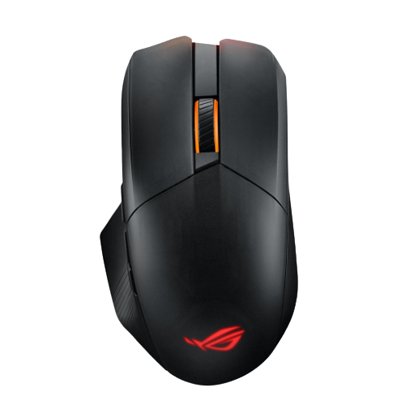

ROG ChakramX
ROG Chakram X wireless RGB gaming mouse with next-gen 36,000 dpi ROG AimPoint optical sensor, 8000 Hz polling rate, low-latency
tri-mode connectivity (RF 2.4 GHz / Bluetooth / wired), 11 programmable buttons, an analog joystick and hot-swappable micro switch
sockets (mechanical / optical ).


 ROG Strix Impact II Moonlight White
ROG Strix Impact II Moonlight White